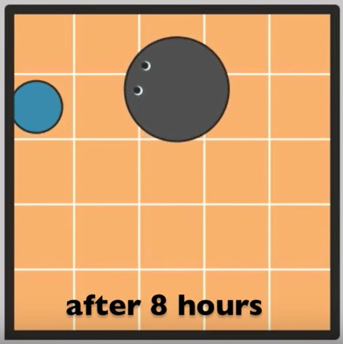

A robot puppy learned to chase a ball around a room. By the time it was a couple of weeks old, it got pretty good. It's brain is BECCA, a general machine learning algorithm.

Becca 6 code
Code for the simulated world
Brandon
@_brohrer_
LinkedIn
March 8, 2015
If you found this helpful, I also recommend How to Turn Your House into a Robot. I work at Microsoft, but my opinions are my own.